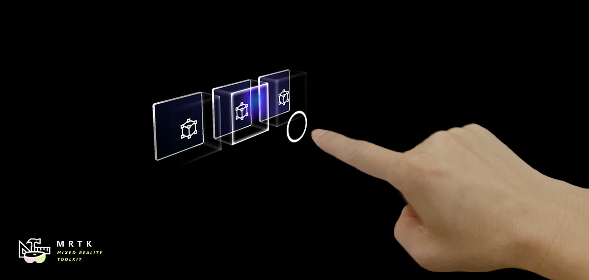

指尖可视化 Fingertip visualization

指尖启示帮助用户识别距离目标物体。指环形状视觉调整其大小基于距离的指尖到对象。指尖可视化主要由FingerCursor.prefab(和脚本)控制，它是PokePointer的光标预装。可视化的其他组件包括ProximityLight脚本和MixedRealityStandard着色器。
如何使用指尖可视化
默认情况下，指尖可视化将工作在任何Unity场景，配置产生一个手指光标。在DefaultMixedRealityToolkitConfigurationProfile下产生指指针:
DefaultMixedRealityInputSystemProfile > DefaultMixedRealityInputPointerProfile > PokePointer > FingerCursor
在一个高水平的指尖可视化工作通过使用接近光投射(proximity light)一个彩色梯度在任何附近表面接受接近光。然后，手指光标会寻找附近的可交互表面，这是由父对象的IMixedRealityNearPointer(s)决定的，当手指移动到一个表面时，将指尖指环与表面对齐。当手指接近表面时，手指环也会使用MixedRealityStandard 着色器的corner属性进行动态动画。
示例场景
你可以在几乎任何使用全关节手的场景中找到指尖可视化的例子，但最突出的是HandInteractionExample场景。
Inspector 属性
FingerCursor 许多指针属性都是从基指针类继承的。重要的属性包括在MixedReality标准着色器中驱动手指环动画的远近表面边距和宽度。其他属性请悬停在 inspector工具提示上。
ProximityLight 接近光设置控制光在靠近和远离表面时的外观。中心、中间和外部颜色控制光线的渐变效果，可以根据应用程序的调色板进行自定义。注意，颜色是HDR(高动态范围)，允许用户将接近光的亮度提高到1以上。其他属性请悬停在inspector 工具提示上。
MixedRealityStandard Shader MixedReality标准着色器在MRTK中被用于许多效果。，指尖可视化两个重要的设置是"Near Fade" 和 "Proximity Light."。 Near Fade允许物体在相机或光线靠近时淡入淡出。确保检查"Light"，让接近的灯光驱动淡入淡出(而不是相机)。你可以反转"Fade Begin" 和 "Fade Complete"的值来反转一个淡入淡出。检查"Proximity Light"的任何表面，你想让接近灯变亮。其他属性请悬停在inspector工具提示上。